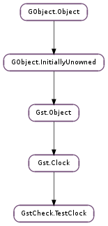

| static | new() |
| static | new_with_start_time(start_time) |
| advance_time(delta) | |
| get_next_entry_time() | |
| has_id(id) | |
| peek_id_count() | |
| peek_next_pending_id() | |
| process_next_clock_id() | |
| set_time(new_time) | |
| wait_for_next_pending_id() | |
| wait_for_pending_id_count(count) |
| Name | Type | Flags | Description |
|---|---|---|---|
| start-time | int | r/w/c | Start Time of the Clock |
None
Bases: Gst.Clock
GstCheck.TestClock is an implementation of Gst.Clock which has different behaviour compared to Gst.SystemClock. Time for Gst.SystemClock advances according to the system time, while time for GstCheck.TestClock changes only when GstCheck.TestClock.set_time () or GstCheck.TestClock.advance_time () are called. GstCheck.TestClock provides unit tests with the possibility to precisely advance the time in a deterministic manner, independent of the system time or any other external factors.
Advancing the time of a GstCheck.TestClock
#include <gst/gst.h>
#include <gst/check/gsttestclock.h>
GstClock *clock;
GstTestClock *test_clock;
clock = gst_test_clock_new ();
test_clock = GST_TEST_CLOCK (clock);
GST_INFO ("Time: %" GST_TIME_FORMAT, GST_TIME_ARGS (gst_clock_get_time (clock)));
gst_test_clock_advance_time ( test_clock, 1 * GST_SECOND);
GST_INFO ("Time: %" GST_TIME_FORMAT, GST_TIME_ARGS (gst_clock_get_time (clock)));
g_usleep (10 * G_USEC_PER_SEC);
GST_INFO ("Time: %" GST_TIME_FORMAT, GST_TIME_ARGS (gst_clock_get_time (clock)));
gst_test_clock_set_time (test_clock, 42 * GST_SECOND);
GST_INFO ("Time: %" GST_TIME_FORMAT, GST_TIME_ARGS (gst_clock_get_time (clock)));
...
Gst.Clock allows for setting up single shot or periodic clock notifications as well as waiting for these notifications synchronously (using Gst.Clock.id_wait ()) or asynchronously (using Gst.Clock.id_wait_async () or gst_clock_id_wait_async_full()). This is used by many GStreamer elements, among them #GstBaseSrc and #GstBaseSink.
GstCheck.TestClock keeps track of these clock notifications. By calling GstCheck.TestClock.wait_for_next_pending_id () or GstCheck.TestClock.wait_for_pending_id_count () a unit tests may wait for the next one or several clock notifications to be requested. Additionally unit tests may release blocked waits in a controlled fashion by calling GstCheck.TestClock.process_next_clock_id (). This way a unit test can control the inaccuracy (jitter) of clock notifications, since the test can decide to release blocked waits when the clock time has advanced exactly to, or past, the requested clock notification time.
There are also interfaces for determining if a notification belongs to a GstCheck.TestClock or not, as well as getting the number of requested clock notifications so far.
N.B.: When a unit test waits for a certain amount of clock notifications to be requested in GstCheck.TestClock.wait_for_next_pending_id () or GstCheck.TestClock.wait_for_pending_id_count () then these functions may block for a long time. If they block forever then the expected clock notifications were never requested from GstCheck.TestClock, and so the assumptions in the code of the unit test are wrong. The unit test case runner in #GstCheck is expected to catch these cases either by the default test case timeout or the one set for the unit test by calling tcase_set_timeout().
The sample code below assumes that the element under test will delay a buffer pushed on the source pad by some latency until it arrives on the sink pad. Moreover it is assumed that the element will at some point call Gst.Clock.id_wait () to synchronously wait for a specific time. The first buffer sent will arrive exactly on time only delayed by the latency. The second buffer will arrive a little late (7ms) due to simulated jitter in the clock notification.
Demonstration of how to work with clock notifications and GstCheck.TestClock
#include <gst/gst.h>
#include <gst/check/gstcheck.h>
#include <gst/check/gsttestclock.h>
GstClockTime latency;
GstElement *element;
GstPad *srcpad;
GstClock *clock;
GstTestClock *test_clock;
GstBuffer buf;
GstClockID pending_id;
GstClockID processed_id;
latency = 42 * GST_MSECOND;
element = create_element (latency, ...);
srcpad = get_source_pad (element);
clock = gst_test_clock_new ();
test_clock = GST_TEST_CLOCK (clock);
gst_element_set_clock (element, clock);
GST_INFO ("Set time, create and push the first buffer\n");
gst_test_clock_set_time (test_clock, 0);
buf = create_test_buffer (gst_clock_get_time (clock), ...);
gst_assert_cmpint (gst_pad_push (srcpad, buf), ==, GST_FLOW_OK);
GST_INFO ("Block until element is waiting for a clock notification\n");
gst_test_clock_wait_for_next_pending_id (test_clock, &pending_id);
GST_INFO ("Advance to the requested time of the clock notification\n");
gst_test_clock_advance_time (test_clock, latency);
GST_INFO ("Release the next blocking wait and make sure it is the one from element\n");
processed_id = gst_test_clock_process_next_clock_id (test_clock);
g_assert (processed_id == pending_id);
g_assert_cmpint (GST_CLOCK_ENTRY_STATUS (processed_id), ==, GST_CLOCK_OK);
gst_clock_id_unref (pending_id);
gst_clock_id_unref (processed_id);
GST_INFO ("Validate that element produced an output buffer and check its timestamp\n");
g_assert_cmpint (get_number_of_output_buffer (...), ==, 1);
buf = get_buffer_pushed_by_element (element, ...);
g_assert_cmpint (GST_BUFFER_TIMESTAMP (buf), ==, latency);
gst_buffer_unref (buf);
GST_INFO ("Check that element does not wait for any clock notification\n");
g_assert (gst_test_clock_peek_next_pending_id (test_clock, NULL) == FALSE);
GST_INFO ("Set time, create and push the second buffer\n");
gst_test_clock_advance_time (test_clock, 10 * GST_SECOND);
buf = create_test_buffer (gst_clock_get_time (clock), ...);
gst_assert_cmpint (gst_pad_push (srcpad, buf), ==, GST_FLOW_OK);
GST_INFO ("Block until element is waiting for a new clock notification\n");
(gst_test_clock_wait_for_next_pending_id (test_clock, &pending_id);
GST_INFO ("Advance past 7ms beyond the requested time of the clock notification\n");
gst_test_clock_advance_time (test_clock, latency + 7 * GST_MSECOND);
GST_INFO ("Release the next blocking wait and make sure it is the one from element\n");
processed_id = gst_test_clock_process_next_clock_id (test_clock);
g_assert (processed_id == pending_id);
g_assert_cmpint (GST_CLOCK_ENTRY_STATUS (processed_id), ==, GST_CLOCK_OK);
gst_clock_id_unref (pending_id);
gst_clock_id_unref (processed_id);
GST_INFO ("Validate that element produced an output buffer and check its timestamp\n");
g_assert_cmpint (get_number_of_output_buffer (...), ==, 1);
buf = get_buffer_pushed_by_element (element, ...);
g_assert_cmpint (GST_BUFFER_TIMESTAMP (buf), ==,
10 * GST_SECOND + latency + 7 * GST_MSECOND);
gst_buffer_unref (buf);
GST_INFO ("Check that element does not wait for any clock notification\n");
g_assert (gst_test_clock_peek_next_pending_id (test_clock, NULL) == FALSE);
...
Since GstCheck.TestClock is only supposed to be used in unit tests it calls g_assert(), g_assert_cmpint() or g_assert_cmpuint() to validate all function arguments. This will highlight any issues with the unit test code itself.
| Returns: | a GstCheck.TestClock cast to Gst.Clock. |
|---|---|
| Return type: | Gst.Clock |
Creates a new test clock with its time set to zero.
MT safe.
| Parameters: | start_time (int) – a Gst.ClockTime set to the desired start time of the clock. |
|---|---|
| Returns: | a GstCheck.TestClock cast to Gst.Clock. |
| Return type: | Gst.Clock |
Creates a new test clock with its time set to the specified time.
MT safe.
| Parameters: | delta (int) – a positive Gst.ClockTimeDiff to be added to the time of the clock |
|---|
Advances the time of the test_clock by the amount given by delta. The time of test_clock is monotonically increasing, therefore providing a delta which is negative or zero is a programming error.
MT safe.
| Returns: | a Gst.ClockTime set to the time of the next pending clock notification. If no clock notifications have been requested Gst.CLOCK_TIME_NONE will be returned. |
|---|---|
| Return type: | int |
Retrieve the requested time for the next pending clock notification.
MT safe.
| Parameters: | id (object) – a Gst.ClockID clock notification |
|---|---|
| Returns: | True if the clock has been asked to provide the given clock notification, False otherwise. |
| Return type: | bool |
Checks whether test_clock was requested to provide the clock notification given by id.
MT safe.
| Returns: | the number of pending clock notifications. |
|---|---|
| Return type: | int |
Determine the number of pending clock notifications that have been requested from the test_clock.
MT safe.
| Return type: | bool, pending_id: object |
|---|
Determines if the pending_id is the next clock notification scheduled to be triggered given the current time of the test_clock.
MT safe.
Return: True if pending_id is the next clock notification to be triggered, False otherwise.
| Returns: | a Gst.ClockID containing the next pending clock notification. |
|---|---|
| Return type: | int |
MT safe.
| Parameters: | new_time (int) – a Gst.ClockTime later than that returned by Gst.Clock.get_time () |
|---|
Sets the time of test_clock to the time given by new_time. The time of test_clock is monotonically increasing, therefore providing a new_time which is earlier or equal to the time of the clock as given by Gst.Clock.get_time () is a programming error.
MT safe.
| Return type: | pending_id: object |
|---|
Waits until a clock notification is requested from test_clock. There is no timeout for this wait, see the main description of GstCheck.TestClock. A reference to the pending clock notification is stored in pending_id.
MT safe.
| Parameters: | count (int) – the number of pending clock notifications to wait for |
|---|
Blocks until at least count clock notifications have been requested from test_clock. There is no timeout for this wait, see the main description of GstCheck.TestClock.
MT safe.